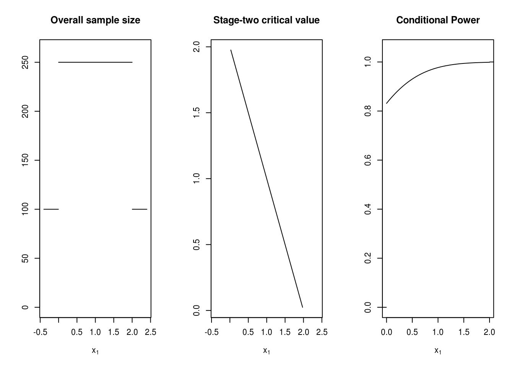

Score and constraints arithmetic
Source:vignettes/score-and-constraints-arithmetic.Rmd
score-and-constraints-arithmetic.RmdScore classes in adoptr
For a two-stage design, both conditional (on the stage-one outcome) as well as unconditional scores (e.g. power) might be of interest. Consider the following group-sequenital example design
design <- TwoStageDesign(
n1 = 100,
c1f = .0,
c1e = 2.0,
n2_pivots = rep(150, 5),
c2_pivots = sapply(1 + adoptr:::GaussLegendreRule(5)$nodes, function(x) -x + 2)
)
plot(design)
A ConditionalScore is a function \(s(\mathcal{D}, x_1)\) evaluating a design \(\mathcal{D}\) at a stage-one outcome \(X_1 = x_1\). In adoptr, a conditional score of a particular class always takes a DataDistribution and a Prior argument to specify a complete sampling distribution. This allows to evaluate() conditional scores, e.g. given \(x_1=0.5\)
uniform_prior <- ContinuousPrior(
function(x) numeric(length(x)) + 1/.2,
support = c(.3, .5)
)
cp <- ConditionalPower(Normal(), uniform_prior)
evaluate(cp, design, x1 = 0.5)
#> [1] 0.9303985Conditional scores can also be plotted directly for a given design by including them in the plot() call.

Since the cp object already contains the specification of the sampling distribution (via Normal() and uniform_prior), the expected score can be computed immediately, in this case giving expected power. The resulting socre is of class IntegralScore, a specific subclass of UnconditionalScore and can be evaluated via
‘Classical power’ at a specific parameter value can be obtained by forming the expected value with respect to a point prior, e.g.,
would be the power at \(0.4\).
Besides ConditionalPower we also provide the conditional sample size, i.e., \(n_2(\cdot)\) as score via ConditionalSampleSize
Defining new scores
In addition to the already existing ones, adoptr allows the user to implement custom scores. Usually, this will be done by defining a new sub-class of ConditionalScore. Assume that one would be interested in the probability of early stopping for futility. We only need to implement a method evaluate(), all other methods are inherited from the abstract class ConditionalScore.
# Define the class
setClass("ConditionalProbabilityEarlyFutility", contains = "ConditionalScore")
# Define constructor
ConditionalProbabilityEarlyFutility <- function(dist, prior) {
new("ConditionalProbabilityEarlyFutility", distribution = dist, prior = prior)
}
# Define corresponding evaluate method
setMethod("evaluate", signature("ConditionalProbabilityEarlyFutility", "TwoStageDesign"),
function(s, design, x1, optimization = FALSE, ...) ifelse(x1 < design@c1f, 1, 0)
)Note that the option optimization has to be given in order to apply a faster Gaussian quadrature if the scores are used during optimization. It suffices to include it as above and can be ignored by the user. Now we can define the IntegralScore representing the probability to stop early for futility under no differenceas
The value is correct since it needs to conform with
Score ‘arithmetic’
For sake of convenience, adoptr allows affine transformations of scores.
Note that conditional and unconditional scores cannot be mixed in this way! This allows to easily specify utility functions to e.g. relax a strict power constraint.
Inequalities
adoptr also provides an easy and intuitive way to specify constraints by simply comparing a (conditional) score to a constant or another score. The following constraints are all valid and can be used in the minimize() function